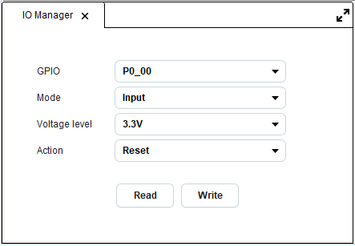
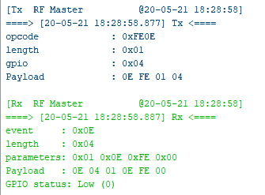

5.3. IO Manager¶
Note
This tool applies to DA1469x, DA1470x and DA1459x family devices.
This tool allows the user to configure GPIO pins. The available pins differ per family and IO Manager tool reads family specific xml files to retrieve the list of pins. When IO Manager is opened, an extra tab named RF Master is added to the ribbon which contains useful utilities. More info here: RF Master’s Ribbon.

Figure 109 IO Manager tool

Figure 110 Sample log output for read gpio command for GPIO P0_04